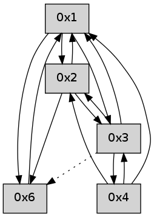

>> << IDX [start] -100 -25 -5 +0 +5 +25 +100 [365.293898106]
 Previous packets
----------------------------------------------------------------------
360.372816 beacon01(adaf) #0 coord=01,02,05,03,04,06 cycle=432.0ms assoc
-- color-indic=0 64 f6 7b
360.382777 beacon02(adaf) #0 coord=01,02,05,03,04,06 cycle=432.0ms assoc 64 a7 84
360.392778 beacon05(adaf) #0 coord=01,02,05,03,04,06 cycle=432.0ms assoc 64 01 ae
360.402778 beacon03(adaf) #0 coord=01,02,05,03,04,06 cycle=432.0ms assoc 64 9d 8a
360.412778 beacon04(adaf) #0 coord=01,02,05,03,04,06 cycle=432.0ms assoc 64 3b a0
360.422778 beacon06(adaf) #0 coord=01,02,05,03,04,06 cycle=432.0ms assoc 64 4f bc
360.434495 [Hello(4): seq=157 sym=3,1,2 asym=6 sysInfo= stat=3:2,0,0,0/1:2,0,0,0/2:6,0,0,0/6:0,0,0,0]
360.436600 [Hello(1): seq=56 sym=6,2,4,3 sysInfo= stat=6:2,0,0,0/2:6,0,0,0/4:0,0,0,0/3:0,0,0,0]
360.439892 [Hello(3): seq=157 sym=2,1,4 asym=6 sysInfo= stat=2:6,0,0,0/1:3,0,0,0/4:0,0,0,0/6:3,0,0,0]
----------------------------------------------------------------------
360.864925 beacon01(adaf) #0 coord=01,02,05,03,04,06 cycle=432.0ms assoc
-- color-indic=0 64 32 14
360.874887 beacon02(adaf) #0 coord=01,02,05,03,04,06 cycle=432.0ms assoc 64 63 eb
360.884886 beacon05(adaf) #0 coord=01,02,05,03,04,06 cycle=432.0ms assoc 64 c5 c1
360.894886 beacon03(adaf) #0 coord=01,02,05,03,04,06 cycle=432.0ms assoc 64 59 e5
360.904887 beacon04(adaf) #0 coord=01,02,05,03,04,06 cycle=432.0ms assoc 64 ff cf
360.914887 beacon06(adaf) #0 coord=01,02,05,03,04,06 cycle=432.0ms assoc 64 8b d3
360.926569 [Hello(2): seq=655 sym=6,3,1,4 sysInfo= stat=6:11,0,0,0/3:3,0,0,0/1:1,0,0,0/4:0,0,0,0]
----------------------------------------------------------------------
361.357033 beacon01(adaf) #0 coord=01,02,05,03,04,06 cycle=432.0ms assoc
-- color-indic=0 64 7e a4
361.366995 beacon02(adaf) #0 coord=01,02,05,03,04,06 cycle=432.0ms assoc 64 2f 5b
361.376995 beacon05(adaf) #0 coord=01,02,05,03,04,06 cycle=432.0ms assoc 64 89 71
361.386996 beacon03(adaf) #0 coord=01,02,05,03,04,06 cycle=432.0ms assoc 64 15 55
361.396995 beacon04(adaf) #0 coord=01,02,05,03,04,06 cycle=432.0ms assoc 64 b3 7f
361.406995 beacon06(adaf) #0 coord=01,02,05,03,04,06 cycle=432.0ms assoc 64 c7 63
361.418713 [Hello(4): seq=158 sym=3,1,2 asym=6 sysInfo= stat=3:3,0,0,0/1:3,0,0,0/2:7,0,0,0/6:0,0,0,0]
361.429283 [Hello(1): seq=57 sym=6,2,4,3 sysInfo= stat=6:2,0,0,0/2:7,0,0,0/4:0,0,0,0/3:1,0,0,0]
----------------------------------------------------------------------
361.849143 beacon01(adaf) #0 coord=01,02,05,03,04,06 cycle=432.0ms assoc
-- color-indic=0 64 ba cb
361.859105 beacon02(adaf) #0 coord=01,02,05,03,04,06 cycle=432.0ms assoc 64 eb 34
361.869103 beacon05(adaf) #0 coord=01,02,05,03,04,06 cycle=432.0ms assoc 64 4d 1e
361.879105 beacon03(adaf) #0 coord=01,02,05,03,04,06 cycle=432.0ms assoc 64 d1 3a
361.889104 beacon04(adaf) #0 coord=01,02,05,03,04,06 cycle=432.0ms assoc 64 77 10
361.899104 beacon06(adaf) #0 coord=01,02,05,03,04,06 cycle=432.0ms assoc 64 03 0c
361.910807 [Hello(2): seq=656 sym=6,3,1,4 sysInfo= stat=6:12,0,0,0/3:3,0,0,0/1:2,0,0,0/4:0,0,0,0]
----------------------------------------------------------------------
362.341250 beacon01(adaf) #0 coord=01,02,05,03,04,06 cycle=432.0ms assoc
-- color-indic=0 64 f7 cc
362.351211 beacon02(adaf) #0 coord=01,02,05,03,04,06 cycle=432.0ms assoc 64 a6 33
362.361212 beacon05(adaf) #0 coord=01,02,05,03,04,06 cycle=432.0ms assoc 64 00 19
362.371211 beacon03(adaf) #0 coord=01,02,05,03,04,06 cycle=432.0ms assoc 64 9c 3d
362.381213 beacon04(adaf) #0 coord=01,02,05,03,04,06 cycle=432.0ms assoc 64 3a 17
362.391212 beacon06(adaf) #0 coord=01,02,05,03,04,06 cycle=432.0ms assoc 64 4e 0b
362.402887 [Hello(4): seq=159 sym=3,1,2 sysInfo= stat=3:3,0,0,0/1:4,0,0,0/2:8,0,0,0]
362.407263 [Hello(1): seq=58 sym=6,2,4,3 sysInfo= stat=6:2,0,0,0/2:8,0,0,0/4:0,0,0,0/3:1,0,0,0]
----------------------------------------------------------------------
362.833358 beacon01(adaf) #0 coord=01,02,05,03,04,06 cycle=432.0ms assoc
-- color-indic=0 64 33 a3
362.843318 beacon02(adaf) #0 coord=01,02,05,03,04,06 cycle=432.0ms assoc 64 62 5c
362.853319 beacon05(adaf) #0 coord=01,02,05,03,04,06 cycle=432.0ms assoc 64 c4 76
362.863319 beacon03(adaf) #0 coord=01,02,05,03,04,06 cycle=432.0ms assoc 64 58 52
362.873320 beacon04(adaf) #0 coord=01,02,05,03,04,06 cycle=432.0ms assoc 64 fe 78
362.883320 beacon06(adaf) #0 coord=01,02,05,03,04,06 cycle=432.0ms assoc 64 8a 64
362.895027 [Hello(2): seq=657 sym=6,3,1 sysInfo= stat=6:12,0,0,0/3:3,0,0,0/1:3,0,0,0]
----------------------------------------------------------------------
363.325467 beacon01(adaf) #0 coord=01,02,05,03,04,06 cycle=432.0ms assoc
-- color-indic=0 64 7f 13
363.335428 beacon02(adaf) #0 coord=01,02,05,03,04,06 cycle=432.0ms assoc 64 2e ec
363.345429 beacon05(adaf) #0 coord=01,02,05,03,04,06 cycle=432.0ms assoc 64 88 c6
363.355428 beacon03(adaf) #0 coord=01,02,05,03,04,06 cycle=432.0ms assoc 64 14 e2
363.365429 beacon04(adaf) #0 coord=01,02,05,03,04,06 cycle=432.0ms assoc 64 b2 c8
363.375429 beacon06(adaf) #0 coord=01,02,05,03,04,06 cycle=432.0ms assoc 64 c6 d4
363.386891 [Hello(1): seq=59 sym=6,2,3 sysInfo= stat=6:2,0,0,0/2:9,0,0,0/3:1,0,0,0]
363.390747 [Hello(4): seq=160 sym=3,1,2 sysInfo= stat=3:3,0,0,0/1:5,0,0,0/2:9,0,0,0]
----------------------------------------------------------------------
363.817575 beacon01(adaf) #0 coord=01,02,05,03,04,06 cycle=432.0ms assoc
-- color-indic=0 64 bb 7c
363.827536 beacon02(adaf) #0 coord=01,02,05,03,04,06 cycle=432.0ms assoc 64 ea 83
363.837536 beacon05(adaf) #0 coord=01,02,05,03,04,06 cycle=432.0ms assoc 64 4c a9
363.847536 beacon03(adaf) #0 coord=01,02,05,03,04,06 cycle=432.0ms assoc 64 d0 8d
363.857536 beacon04(adaf) #0 coord=01,02,05,03,04,06 cycle=432.0ms assoc 64 76 a7
363.867537 beacon06(adaf) #0 coord=01,02,05,03,04,06 cycle=432.0ms assoc 64 02 bb
363.879212 [Hello(2): seq=658 sym=6,3,1 sysInfo= stat=6:12,0,0,0/3:3,0,0,0/1:4,0,0,0]
----------------------------------------------------------------------
364.309682 beacon01(adaf) #0 coord=01,02,05,03,04,06 cycle=432.0ms assoc
-- color-indic=0 64 35 69
364.319643 beacon02(adaf) #0 coord=01,02,05,03,04,06 cycle=432.0ms assoc 64 64 96
364.329644 beacon05(adaf) #0 coord=01,02,05,03,04,06 cycle=432.0ms assoc 64 c2 bc
364.339643 beacon03(adaf) #0 coord=01,02,05,03,04,06 cycle=432.0ms assoc 64 5e 98
364.349644 beacon04(adaf) #0 coord=01,02,05,03,04,06 cycle=432.0ms assoc 64 f8 b2
364.359644 beacon06(adaf) #0 coord=01,02,05,03,04,06 cycle=432.0ms assoc 64 8c ae
364.371080 [Hello(1): seq=60 sym=6,2,3 sysInfo= stat=6:3,0,0,0/2:10,0,0,0/3:1,0,0,0]
364.374968 [Hello(4): seq=161 sym=3,1,2 sysInfo= stat=3:3,0,0,0/1:5,0,0,0/2:10,0,0,0]
----------------------------------------------------------------------
364.801790 beacon01(adaf) #0 coord=01,02,05,03,04,06 cycle=432.0ms assoc
-- color-indic=0 64 f1 06
364.811750 beacon02(adaf) #0 coord=01,02,05,03,04,06 cycle=432.0ms assoc 64 a0 f9
364.821751 beacon05(adaf) #0 coord=01,02,05,03,04,06 cycle=432.0ms assoc 64 06 d3
364.831751 beacon03(adaf) #0 coord=01,02,05,03,04,06 cycle=432.0ms assoc 64 9a f7
364.841751 beacon04(adaf) #0 coord=01,02,05,03,04,06 cycle=432.0ms assoc 64 3c dd
364.851751 beacon06(adaf) #0 coord=01,02,05,03,04,06 cycle=432.0ms assoc 64 48 c1
364.863428 [Hello(2): seq=659 sym=6,3,1 sysInfo= stat=6:12,0,0,0/3:3,0,0,0/1:5,0,0,0]